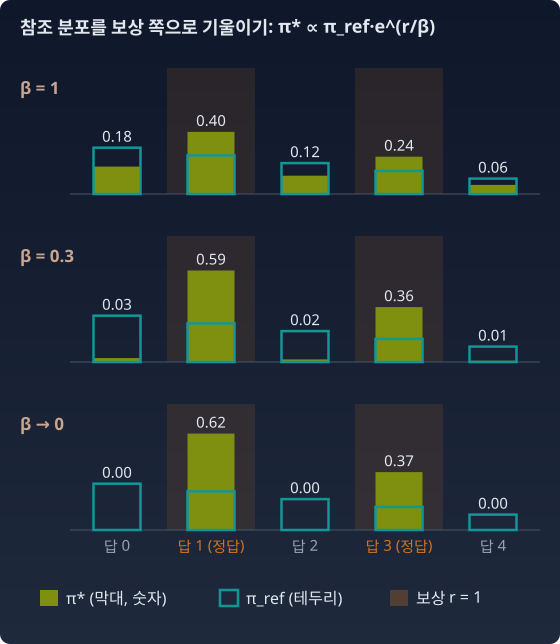

기울이기: KL로 묶은 보상 최대화의 닫힌꼴
“보상을 올리라고만 하면 모형은 한 답에 몰빵한다. 참조에서 멀어지지 말라고만 하면 아무것도 배우지 않는다. 둘을 저울질한 최적의 분포는 어떤 모양인가?”
RLVR은 SFT와 사정이 다르다. 정답 데이터가 주어지지 않는다. 모형이 직접 답을 내고, 보상 r 이 점수를 매긴다. 그리고 모형이 원래 모습에서 너무 멀어지지 않도록 참조 모형 πref 와의 KL로 묶는다. 이 목적식과 그 닫힌꼴 해가 이 장 기하학의 핵심이다.
비유
라디오의 정밀 다이얼 — RLVR은 정확한 주파수 하나에 맞추려는 다이얼과 닮았다. 잡음이 사라지고 선명한 소리만 남기를 바란다. “주어진 수학 문제에 대해, 검증 가능한 정답에 도달하라.” 조건이 필터처럼 곱해지는 것처럼 보인다. 수학 문제 × 정확한 답 × 검증 통과. 조건이 하나 붙을 때마다 겹치는 영역만 살아남는다.
답이 둘뿐일 때 먼저
가장 작은 경우로 저울의 양 끝을 보자. 답이 둘뿐이고, 참조 모형은 답 A 에 0.8, 답 B 에 0.2 를 준다. 정답은 B 하나다(보상 A = 0, B = 1).
| 무엇만 신경 쓰나 | 정책 (A, B) | 엔트로피 |
|---|---|---|
| 보상만 올린다 | (0, 1) | 0 |
| 참조에서 멀어지지만 않는다 | (0.8, 0.2) | 0.500 |
| 둘을 저울질한다 | ? | ? |
보상만 보면 정책은 B 에 전부 건다. 참조만 보면 아무것도 바뀌지 않는다. 둘 사이 어딘가가 답일 텐데, 그 「어딘가」는 어떤 규칙으로 정해질까? 이것을 식으로 세운 것이 아래 목적식이다.
목적식
RLHF와 RLVR이 공통으로 쓰는 목적식은 이렇다.
KL 안에서 평균을 내는 무게가 π 쪽에 있다. π 가 참조가 0을 준 답에 확률을 두면 log(π/πref) 가 무한대로 간다. 그러니 이 벌칙은 참조가 불가능하다고 본 답을 새로 지어내는 것을 막는다. 반대로 참조가 가진 답 몇 개를 π 가 버리는 것에는 너그럽다. (그 답에서는 π = 0 이라 무게 자체가 0이다.) 0을 강요하는(zero-forcing) 벌칙이다.
닫힌꼴 해
π 가 어떤 분포든 될 수 있다면, 이 문제는 손으로 풀린다. 목적식을 이렇게 고쳐 쓰면 된다.
확인은 한 줄이다. Eπ[r] − β Σ π log(π/πref) = −β Σ π log(π / (πref er/β)) 이고, πref er/β = Z·π* 를 넣으면 위 식이 된다. β log Z 는 π 와 무관하고, KL(π‖π*) 는 π = π* 에서만 0이다. 그러니 최적해는 π* 하나다.
이 식을 두고 두 가지를 확인해 두자. 첫째, 보상이 없으면(r = 0) π* = πref 다. KL 벌칙만 있는 문제에서는 어느 방향의 KL을 쓰든 답이 참조 그 자체다. 어떤 KL을 골랐느냐가 "한 봉우리로 몰린다"를 만들지는 않는다. 그것은 다음 절에서 다시 따진다. 둘째, 좁히기를 만드는 것은 보상 항이다. 보상이 높은 답의 확률이 er/β 배로 불어난다.
답이 둘뿐인 위 표의 빈칸도 이것으로 채워진다. β = 1 이면 B 의 몫 0.2 만 e 배로 불어 0.544 가 되고, 합 1.344 로 나누면 정책은 (0.595, 0.405), 엔트로피는 0.675 다. 참조에서 출발해 B 쪽으로 기울었지만 A 를 버리지는 않았다. β 를 줄이면 이 기울기가 더 가팔라진다. 아래 파이썬의 다섯 답변 예로 그려 보면 이렇다.

곱셈의 길 — e-측지선
π* 의 모양을 지수족의 눈으로 보자. 지수족은 기준 분포에 exp(θ × 통계량)을 곱하고 정규화한 분포들의 모임이다.
보상 r 이 충분통계량(분포가 답변에서 보는 유일한 값), πref 가 캐리어(기준 분포), θ = 1/β 가 자연모수인 1차원 지수족이다. θ 좌표에서 직선 — 곧 이 족 전체가 πref 에서 출발하는 e-측지선이다. 로그를 씌우면 log πθ = log πref + θ r − F(θ). 로그 확률에 보상을 더하는 것, 확률에는 곱하는 것. β를 줄이는 것은 이 e-측지선을 따라 참조에서 멀어지는 것이다.
보상이 0 또는 1인 이진 보상(RLVR의 정답 검사)이면 그림이 더 선명해진다. 정답들의 확률은 모두 e1/β 배, 오답들은 그대로. 그다음 정규화. β → 0 이면 오답의 몫이 0으로 가고,
참조 정책에 "정답일 것"이라는 조건을 거는 것 — 참조 분포에 정답이면 1, 아니면 0인 함수(지시함수)를 곱하고 정규화하는 것이다. 쉼표로 조건을 붙이는 것, AND 그 자체다. 정답들 사이의 상대 비율은 참조가 준 그대로 남는다는 점도 눈여겨보자. 강화학습은 참조가 모르던 정답을 새로 만들지 않는다. 참조가 이미 가진 정답을 추려낼 뿐이다. (적어도 이 이상적인 최적해에서는 그렇다. 실제 학습은 모형족과 최적화의 한계 때문에 이 해에 정확히 가지 못한다.)
불러오는 중…
DPO — 보상을 정책 안에 숨기기
닫힌꼴을 뒤집어 읽으면 보상이 정책으로 표현된다.
Rafailov 외(2023)의 DPO(Direct Preference Optimization)는 이 식에서 출발한다. 두 답변 중 사람이 어느 쪽을 더 좋아했는지만 비교하면 β log Z 가 상쇄된다. 그래서 보상 모델을 따로 학습하지 않고, β log(π/πref) 를 "암묵적 보상"으로 삼아 정책을 곧바로 학습한다. 논문의 부제가 이것을 한 줄로 말한다. “당신의 언어모델은 사실 보상 모델이다.”
파이썬
참조가 다섯 답변에 확률을 나눠 주고, 그중 둘(답 1, 답 3)이 정답이다.
import numpy as np
ref = np.array([0.30, 0.25, 0.20, 0.15, 0.10]) # 참조 정책 π_ref
r = np.array([0, 1, 0, 1, 0.]) # 이진 보상: 답 1, 답 3이 정답
for beta in [2, 1, 0.5, 0.2, 0.05]:
w = ref * np.exp(r / beta)
pi = w / w.sum() # π* ∝ π_ref · exp(r/β)
kl = np.sum(pi * np.log(pi / ref))
obj = pi @ r - beta * kl
print(f"β={beta:<4} π*={np.round(pi, 3)} E[r]={pi @ r:.3f} KL={kl:.3f} "
f"목적={obj:.4f} βlogZ={beta * np.log(w.sum()):.4f}")
print("정답으로 조건부화한 π_ref:", ref * r / (ref @ r))
# β=2 π*=[0.238 0.327 0.159 0.196 0.079] E[r]=0.524 KL=0.031 목적=0.4614 βlogZ=0.4614
# β=1 π*=[0.178 0.403 0.119 0.242 0.059] E[r]=0.644 KL=0.121 목적=0.5231 βlogZ=0.5231
# β=0.5 π*=[0.084 0.52 0.056 0.312 0.028] E[r]=0.831 KL=0.394 목적=0.6343 βlogZ=0.6343
# β=0.2 π*=[0.005 0.619 0.003 0.371 0.002] E[r]=0.990 KL=0.856 목적=0.8188 βlogZ=0.8188
# β=0.05 π*=[0. 0.625 0. 0.375 0. ] E[r]=1.000 KL=0.916 목적=0.9542 βlogZ=0.9542
# 정답으로 조건부화한 π_ref: [0. 0.625 0. 0.375 0. ]
최적해에서 목적식의 값은 정확히 β log Z 다(KL(π*‖π*) = 0 이니까). β가 작아질수록 두 정답의 비율은 0.25 : 0.15 = 0.625 : 0.375 로 모인다. 참조가 준 비율 그대로다. KL은 log(1/0.40) = 0.916 에서 멈춘다. 정답 집합의 참조 확률이 0.40 이었으니까.
수확
“KL로 묶은 보상 최대화의 해는 πref·er/β 이다. 참조 분포를 보상 방향으로 기울인 지수족, β가 움직이는 e-측지선. 이진 보상에서 β → 0 이면 정답 집합으로 조건부화한 참조 — AND. 곱셈의 길은 SFT가 아니라 여기에 있었다.”
인물 이야기 — 에셔(Fredrik Esscher)와 기울인 분포
분포에 e 의 거듭제곱을 곱해 한쪽으로 기울이는 셈은 언어모델보다 훨씬 먼저, 보험 회사의 걱정에서 나왔다. 보험 회사가 정말 알고 싶은 것은 한 해 동안 들어올 보험금 청구액의 합이 감당하지 못할 만큼 커질 확률이다. 합의 분포는 정확히 계산하기 어려워서 정규분포(중심극한정리)나 그것을 다듬은 에지워스 전개로 어림하는데, 이런 어림은 분포의 가운데에서는 잘 맞고 꼬리에서는 잘 맞지 않는다. 회사가 두려워하는 큰 손실은 하필 그 꼬리에 있다.
스웨덴의 보험 수리학자 에셔는 1932년 논문 「위험 집합 이론의 확률 함수에 대하여」에서 방향을 바꿨다. 꼬리를 가운데의 어림으로 재려 하지 말고, 분포에 ehx 를 곱한 뒤 다시 정규화해서 관심 있는 큰 값 x 가 새 분포의 평균이 되게 옮긴다. 옮긴 분포에서는 그 자리가 가운데이니 어림이 잘 맞는다. 거기서 잰 다음, 곱했던 ehx 를 나눠 원래 분포로 되돌린다. 이 셈은 에셔 변환(Esscher transform)이라는 이름으로 보험 수리학에 자리 잡았고, 드문 사건을 흉내 내어 확률을 셈하는 중요도 표집(importance sampling)에서는 「지수 기울이기(exponential tilting)」라는 이름으로 쓰인다.
이 절의 π* ∝ πref·er/β 가 바로 이 꼴이다. 에셔가 x 자리에 청구액을 놓았다면, 강화학습은 보상 r 을 놓고 1/β 만큼 기울인다. 무엇을 기울이든 결과는 기준 분포에서 출발하는 지수족이다.
문제 4. 보상과 KL 사이의 최적 정책
답변 y 가 유한 개인 상황에서 Eπ[r] − β KL(π‖πref) 를 최대화하는 π 를 라그랑주 승수로 구하라. 정규화 제약 Σπ = 1 을 빼먹으면 어떤 답이 나오는지도 확인하라.
함께 풀기

변수는 π(y) 들이에요. 미분부터 해 봐요.

π(y) 로 미분하면 r(y) − β(log π(y) − log πref(y) + 1) 이에요. 0으로 두면 π(y) = πref(y)·er(y)/β − 1 이요.
답이 확률분포예요?
더해 보면… πref 가 0.3, 0.7 이고 보상이 1, 0, β = 1 이면 0.3·e⁰ + 0.7·e⁻¹ = 0.558 이네요. 1이 아니에요.

합이 1이 아닌 걸 그냥 나누면 되잖아. 코드에서는 늘 그렇게 해.
결과는 맞아요. 그런데 서연 학생의 식이 왜 틀렸는지는 짚고 가요. 무엇을 빼먹었죠?
제약이요. π 가 확률분포여야 한다는 조건 없이 최대화하면, 목적식이 π 의 크기까지 마음대로 고르게 돼요. 라그랑주 항 λ(Σπ − 1) 을 넣으면 −1 자리에 λ 가 붙어서, 상수 인자가 정규화 상수 Z 로 정해져요.
그래서 π*(y) = πref(y)er(y)/β/Z. 방금 숫자로는요?
정규화 전 값이 0.3e = 0.815, 0.7 이니까 Z = 1.515, π* = (0.538, 0.462) 요.

정규화 상수가 그냥 나누기가 아니라 승수에서 나오는 거였네요. 해석학 시간에 구면 위에서 최댓값 찾을 때, 제약을 빼고 풀면 원점에서 무한대로 도망가던 것과 같은 실수예요.
조교가 "합계가 100점이 되게 배점하라"는 조건을 안 읽고 문제마다 점수를 매긴 거네. 나중에 비율로 맞추면 되긴 하는데, 조건이 왜 있는지는 모르는 거고.
문제 5. 보상이 세 가지일 때 β → 0
πref = (0.30, 0.25, 0.20, 0.15, 0.10) 이고(답은 0부터 센다), 보상이 이진이 아니라 r = (0.5, 0, 1, 0, 1) 이다. 답 0 은 반쯤 맞은 답이다. (가) β → 0 일 때 π* 의 극한을 구하라. (나) 그 극한에서 KL(π*‖πref) 를 구하라. (다) 이 극한이 「보상이 0 보다 큰 답들로 조건부화한 참조」와 같아지려면 보상이 어떤 꼴이어야 하는가?
함께 풀기
보상이 0 보다 큰 답이 0, 2, 4 니까 참조를 그 셋으로 조건부화하면 돼요. 그 답들 사이의 비율은 참조 그대로 남으니까 0.30 : 0.20 : 0.10, 곧 (0.5, 0, 0.333, 0, 0.167) 이요.
답 0 과 답 2 의 확률 비를 β 로 적어 볼래요?
π*(0)/π*(2) = (0.30·e0.5/β)/(0.20·e1/β) = 1.5·e−0.5/β 예요.

β → 0 이면 e−0.5/β 가 0 으로 가요… 답 0 이 사라지네요. β = 0.2 만 돼도 비가 1.5·e−2.5 = 0.12 예요.
보상이 1 인 답 2 와 답 4 는 e1/β 를 똑같이 받으니까 둘 사이 비율만 남고. 그럼 극한은 둘에 0.20 : 0.10 으로 나눈 (0, 0, 0.667, 0, 0.333) 이에요.
KL은요?
π* 가 답 2, 4 안에서 πref 에 비례하니까 log(π*/πref) 가 어디서나 log(1/0.30) 이에요. 그래서 1.204 요.
서연 학생의 첫 답은 어떤 보상이었으면 맞았을까요?
보상이 0 아니면 1 뿐일 때요. β → 0 은 「보상이 0 보다 큰 답」이 아니라 「보상이 가장 큰 답들」을 고르는 거였어요. 이진 보상에서는 가장 큰 보상이 곧 1 이라 둘이 같았던 거고요.
조별 과제에서 A+ 받은 조가 두 개면 둘 다 A+지, 인원 많은 조 하나만 A+가 되는 게 아니잖아요. 그렇다고 B+ 받은 조까지 장학금을 나눠 받지는 않고요.
문제 6. DPO 가 숨긴 보상 읽기
DPO 로 학습을 마친 정책이 한 질문의 두 답변 A, B 에 π(A) = 0.3, π(B) = 0.4 를 준다. 참조 정책은 πref(A) = 0.1, πref(B) = 0.5 였고 β = 0.1 이다. (가) DPO 의 암묵적 보상으로 볼 때 어느 답변의 보상이 얼마나 더 큰가? (나) 두 답변의 보상 값 자체도 알 수 있는가?
함께 풀기
B 죠. 학습을 마친 정책이 B 를 더 자주 내니까, B 를 더 좋게 본 거예요.
위 식에서 보상은 무엇으로 정해졌죠?

β log(π/πref)… 확률 자체가 아니라 참조와의 비율이네요. A 는 log(0.3/0.1) = log 3 = 1.099, B 는 log(0.4/0.5) = −0.223 이요.
β 를 곱하면 A 가 0.110, B 가 −0.022, 차이는 0.132 예요. A 가 위네요. B 는 오히려 참조보다 덜 내게 됐고요.
그럼 (나)도 바로 나오는 거 아니야? 0.110 하고 −0.022.
식에 항이 하나 더 있지 않았나요?
β log Z 요. 답변과 무관한 상수인데, 우리는 그 값을 몰라요. 그러니 보상 값 자체는 모르고 두 답변의 차이 0.132 만 알아요.
그 차이만으로 학습이 되는 까닭은요?
DPO 가 배우는 데이터가 「A 와 B 가운데 어느 쪽이 나은가」라는 비교라서요. 비교에서는 상수가 상쇄되니까 상수를 모르는 게 흠이 아니에요. 해석학 시간에 부정적분이 적분상수만큼은 정해지지 않아도, 두 점 사이의 정적분은 정확히 나오던 것과 같아요.